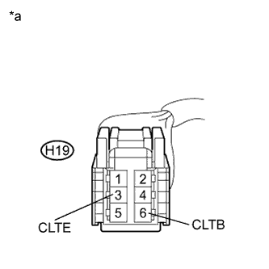
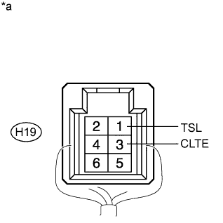

DTC B14A2 Driver Side Solar Sensor Short Circuit |
| DTC Code | DTC Detection Condition | Trouble Area |
| B14A2 | An open or short in the driver side solar sensor circuit. |
|
| 1.READ VALUE USING INTELLIGENT TESTER (SOLAR SENSOR) |
Use the Data List to check if the automatic light control sensor (solar sensor) is functioning properly (Click here).
| Tester Display | Measurement Item/Range | Normal Condition | Diagnostic Note |
| Solar Sensor (D side) | Automatic light control sensor (solar sensor) / Min.: 0, Max.: 255 | Driver side solar sensor voltage increases as brightness increases | Open in the circuit: 0. Short in the circuit: 255. |
| Result | Proceed to |
| OK (When troubleshooting according to problem symptoms table) | A |
| OK (When troubleshooting according to the DTC) | B |
| NG | C |
|
| ||||
|
| ||||
| A | ||
| ||
| 2.CHECK HARNESS AND CONNECTOR (POWER SOURCE CIRCUIT) |
|  |
Disconnect the H19 sensor connector.
Measure the voltage according to the value(s) in the table below.
| Tester Connection | Switch Condition | Specified Condition |
| H19-6 (CLTB) - H19-3 (CLTE) | Engine switch off | Below 1 V |
| H19-6 (CLTB) - H19-3 (CLTE) | Engine switch on (IG) | 11 to 14 V |
| *a | Front view of wire harness connector (to Automatic Light Control Sensor [Solar Sensor]) |
|
| ||||
| OK | |
| 3.CHECK HARNESS AND CONNECTOR (SOLAR SENSOR - AIR CONDITIONING AMPLIFIER) |
Disconnect the H19 sensor connector.
Disconnect the G13 amplifier connector.
Measure the resistance according to the value(s) in the table below.
| Tester Connection | Condition | Specified Condition |
| H19-1 (TSL) - G13-33 (TSD) | Always | Below 1 Ω |
| H19-1 (TSL) - Body ground | Always | 10 kΩ or higher |
|
| ||||
| OK | |
| 4.CHECK AUTOMATIC LIGHT CONTROL SENSOR (SOLAR SENSOR) |
|  |
Remove the automatic light control sensor (solar sensor) with its connector still connected (Click here).
Measure the voltage according to the value(s) in the table below.
| Tester Connection | Switch Condition | Specified Condition |
| H19-1 (TSL) - H19-3 (CLTE) | Engine switch on (IG) Sensor subjected to electric light | 0.8 to 4.3 V |
| H19-1 (TSL) - H19-3 (CLTE) | Engine switch on (IG) Sensor covered with cloth | Below 0.8 V |
| *a | Component with harness connected (Automatic Light Control Sensor [Solar Sensor]) |
|
| ||||
| OK | ||
| ||
| 5.CHECK HARNESS AND CONNECTOR (MAIN BODY ECU - SOLAR SENSOR) |
Disconnect the G47 ECU connector.
Disconnect the H19 sensor connector.
Measure the resistance according to the value(s) in the table below.
| Tester Connection | Condition | Specified Condition |
| G47-22 (CLTE) - H19-3 (CLTE) | Always | Below 1 Ω |
| G47-20 (CLTB) - H19-6 (CLTB) | Always | Below 1 Ω |
| G47-22 (CLTE) - Body ground | Always | 10 kΩ or higher |
| G47-20 (CLTB) - Body ground | Always | 10 kΩ or higher |
|
| ||||
| OK | ||
| ||